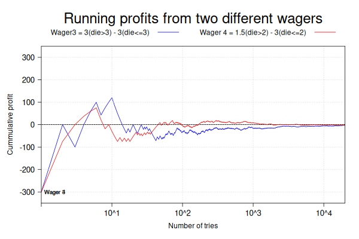

library(lattice)
numsimulations = 20000
numframes = 30
set.seed(1892)
dievalues = seq(1,6)
for (i in 1:numframes){
die3 = sample(dievalues, numsimulations, replace=T)
die4 = sample(dievalues, numsimulations, replace=T)
profit3 = 300*( die3>3 ) - 300*( die3<=3 )
profit4 = 150*( die4>2 ) - 300*( die4<=2 )
runningprofit3 = cumsum(profit3) / seq(1, numsimulations)
runningprofit4 = cumsum(profit4) / seq(1, numsimulations)
df3 <- data.frame(wager=rep(3,length(runningprofit3)), runningprofit=runningprofit3, tries=seq(1,numsimulations))
df4 <- data.frame(wager=rep(4,length(runningprofit4)), runningprofit=runningprofit4, tries=seq(1,numsimulations))
df <- rbind(df3, df4)
# more code follows here to generate the plots and the PNG files
}Why doing this?
Do you ever feel like a plain graph is not sufficient to explain some trend in your data or the solution of a mathematical model? For those times, generating animations can be just what you need. They can also become visualization aids during data exploration or a means to explain observations to yourself and others.
This is by no means an exhaustive list of use cases, however, they are pretty common and their impact can be high. The deliverable is an embedded moving graph for your presentation or web content. After all, if an image is worth a thousand words then an animation should be worth a bit more.
This workflow is the basis to create the visualizations used in this LinkedIn post [1]

In that post this animation was created using a simple but effective workflow.
- Run a numerical model using simulated input
- The output of each run is used to construct a plot.
- Each plot is saved to a PNG file.
- Then a GIF file is constructed with all the jpeg files.
To illustrate this workflow we will use simulation. Other use cases may be sensor data or any observed data.
Prepare the input data
When applying this algorithm to a simulation, the input in Step 1 above usually comes from a pseudo random number generator in your language of choice. In this case I used the following R code to generate the data before constructing the plots and the animation. The code computes the cumulative profit or loss from repeatedly playing the same wager for a very long time. Eventually the expected result should tend to zero for either wager 3 or 4.
Line 3 sets the number of simulation points to 20,000 so we get sharp plots. Line 5 sets the number of frames that the animation will have. Line 6 defines a fixed value for reproducible results from the pseudo random number generator used by the sample function that will be used in lines 11 and 12. Line 7 defines the 6 possible results of rolling a single die. Line 9 starts a loop to generate the frames of the animation. In lines 11 and 12 two vectors of 20,000 elements are created, each one simulates one roll of a fair die. The code in lines 14 and 15 create the two vectors of 20,000 elements, each represents the profit resulting from rolling the die once. Each throw is an independent event, thus their individual profit can be computed with the input vectors die3 and die4.
Lines 17 and 18 compute the cumulative profit or loss resulting from sequentially realizing the 20,000 wagers sequentially.
The following code inspects some of the vectors generated above for each frame. R is a natively vectorized language, therefore no special libraries are necessary. The library import statement in line 1 is for plot generation in a latter step.
length(runningprofit3)
#> [1] 20000
head(runningprofit3)
#> [1] -300 0 -100 0 60 100
tail(runningprofit3)
#> [1] -2.925731 -2.910582 -2.895434 -2.880288 -2.895145 -2.880000
head(runningprofit4)
#> [1] -300.0 -75.0 0.0 37.5 60.0 75.0
tail(runningprofit4)
#> [1] -1.822956 -1.815363 -1.830275 -1.845185 -1.860093 -1.852500One can see how the initial profit or loss can be large, however the net value tends to be near zero after many repetitions.
Construct plots with the output data
The graphic package Trellis is designed to work on data presented in the so-called long format. The idea is that the dataframe with all the data has a column representing a categorical variable representing the subgroup the data belongs to. This is a fundamental idea behind this package. This plotting of many subgroups in a grid-like pattern is what is called faceting in ggplot2 terms.
In lines 1 and 2 above, separate data frames each of 20,000 rows are created. In line 3 they are stacked vertically together to form a single data structure with 40,000 rows.
The following calls to the first and last three lines of the dataframe illustrate the long format of the data. The column wager represent the subgroup each row belongs to: wager 3 or 4.
head(df, n = 3)
#> wager runningprofit tries
#> 1 3 -300 1
#> 2 3 0 2
#> 3 3 -100 3
tail(df, n = 3)
#> wager runningprofit tries
#> 39998 4 -1.845185 19998
#> 39999 4 -1.860093 19999
#> 40000 4 -1.852500 20000We are ready to plot using the lattice plotting package. The following is the function that creates and returns such a lattice plot object. It receives two arguments, the dataframe in long form and a list of arguments to configure the plot.
# Create a lattice xy plot object in memory ------------------------------------------------
# Purpose: to construct a valid lattice log_x-y plot of one or more series
# Description: The argument `the_data_frame` is in long form, where each row has data
# for a sub-group. The list of arguments to construct the plot are:
# 1. the name of the variable that defines the subgroups, called subgroup_variable
# 2. a list of text labels for title, x and y axis, called text_labels_for_plot
# 3. a vector of the min and max values to use for the y axis, min_max_y_to_plot
# 4. a vector of text descriptions for every series to plot, or NULL, called subgroup_descriptions
create_xyplot <- function(the_data_frame,
args_to_plot) {
# unpack arguments
the_subgroup_variable_name <- args_to_plot[['subgroup_variable']]
the_text_plot_labels <- args_to_plot[['text_labels_for_plot']]
min_max_y_to_plot <- args_to_plot[['min_max_y_to_plot']]
the_subgroup_descriptions <- args_to_plot[['subgroup_descriptions']]
# setup values for plotting
group_labels <- as.vector(unique(the_data_frame[the_subgroup_variable_name]))
wager_labels <- as.vector(sapply( group_labels, FUN = function(x) {paste0("Wager ", x)}))
if (is.null(the_subgroup_descriptions)) {
the_subgroup_descriptions <- wager_labels
}
wagers_vector <- the_data_frame[[the_subgroup_variable_name]]
max_x_value <- length(wagers_vector[wagers_vector==group_labels[[the_subgroup_variable_name]][1]])
xyplot(
runningprofit ~ tries,
data = the_data_frame,
groups = wager,
par.settings = list(superpose.line = list(
col = c("blue", "red", "green", "yellow", "brown", "cyan"),
lwd = 1
)),
auto.key = list(
space = "top",
columns = 2,
text = the_subgroup_descriptions,
title = the_text_plot_labels[['title']],
cex.title = 2,
lines = TRUE,
points = FALSE
),
xlab = the_text_plot_labels[['x_label']],
xlim = c(1, max_x_value),
scales = list(
cex = c(1.1, 1.1), # increase font size
x = list(log = T), # log scale for x-axis
y = list(log = F),
alternating = 1, # axes labels left/bottom
tck = c(1, 0)
), # ticks only with labels
ylab = the_text_plot_labels[['y_label']],
ylim = min_max_y_to_plot,
type = c("l"),
panel = panel.superpose,
panel.groups = function(x, y, group.number, ...) {
panel.abline(h = y[which(y == 0.0)],
lty = "dotted",
col = "black")
panel.grid(v = -1,
h = -1,
lty = 3)
xt <- x[x == log(min(x) + 1)] # find x coordinate for first point
yt <- y[x == min(x)] # find y coordinate for first point
panel.text(xt,
yt,
labels = wager_labels[group.number],
pos = 4, # show labels on right side
...)
panel.xyplot(x, y, ...)
}
)
}An important detail of the lattice package is that it allows the superposition of the two subgroups: wager 3 and 4 thanks to the panel.superpose and the lambda function passed to the argument panel.groups. This panel type allows to paint the two different sub-groups on the same axis using the provided function. This function receives the group identifier when called once for each subgroup. In this particular case it adds programmatically a label to the first point of the series. The panel.superpose allows the positioning of the line plots corresponding to the two series on the same x-y grid so we can compare them visually.
Saving the plot as a PNG file
The plot object generated in the previous step lives in the computer memory as an R object while we run the R session. We want to persist it in the file system as a PNG file. To achieve this goal we use the functions png and print.
In the code snipped below, I call the png function in line 1 to set the PNG file writer as the output device for subsequent calls to print images. Line ** 3** creates the arguments expected by the function as one list. The elements of the list are named so their order does not matter. Only the subgroup_descriptions can be NULL. Their function is explained by their name. In line 11 the lattice plot is created in memory and returned immediately to be assigned to the variable pp. The function xyplot comes from the package lattice. Line 14 passes the lattice object pp to the function print to create the PNG file using the name convention given in line 1. Multiple calls to print will create new PNG files adding one each timne to the numeric value represented by the %02d that is part of the file name.
png(file="simwager%02d.png", width=600, height=400)
args_to_plot <- list( subgroup_variable = 'wager',
subgroup_descriptions = c("Wager3 = 3(die>3) - 3(die<=3)",
"Wager 4 = 1.5(die>2) - 3(die<=2)"),
text_labels_for_plot = list(title="Running profits from two different wagers",
x_label="Number of tries",
y_label="Cummulative profit"),
min_max_y_to_plot = c(-350, 350))
pp <- create_xyplot(df,
args_to_plot)
print(pp)
dev.off()
#> png
#> 2This code creates a file called simwager01.png in the current working directory for the R session, as shown below.

If this sequence of calls are part of an iteration loop, several PNG files will be created, each with an monotonically increased serial number as part of its name. For an explanation of how it works see the r-documentation for the function png
I left some details out of the code shown at the beginning of this post because it would have been a distraction then. We must create a directory called animations from the project root path and then make it the current working directory as the first action in the script. By doing this all the file actions occur in the same folder. That is, the PNG files required for one animation are first created and then deleted after they are used in the same directory where the animated GIF file is created.
The following code accomplishes creating and changing into this directory.
if (!require("pacman")) install.packages("pacman")
pacman::p_load("here")
suppressWarnings(my_proj_path <- here())
if (!file.exists(file.path(my_proj_path,"animations"))) {
dir.create(file.path(my_proj_path, "animations"))
}
setwd(file.path(my_proj_path, "animations"))Creating the GIF animated file
What we have up to this point is a directory with PNG files. The implicit assumption is that the order each PNG file is to be used to create the animation is implicit in its name. I will use a program to render an animated file in GIF format from the PNG files using the command line. The renderer used is convert from the package ImageMagik, publicly available as binaries for download for Linux, Mac and Windows, this example was run on Ubuntu Linux 24.04, version ImageMagick 6.9.12-98 Q16 x86_64 18038.
To call convert we make an operating system call from the R script. The arguments assume that all PNG files in the current directory are meant to be part of the GIF output. The order of the frames for the animation come from the digits included in the file names using the %02d in the call to the function png. Finally the PNG files are deleted from the folder.
system("/usr/bin/convert -delay 40 *.png wager_comp_sim.gif")
file.remove(list.files(pattern=".png"))The delay argument sets the time pause between frames in centiseconds. This makes the frame rate approximately 2.5 frames per second.
The package gganimate, [2], works under the same workflow explained here but it gives the flexibility to choose renderer and the file format of the final animation.
Conclusion
The basic workflow for the creation of a GIF animated file has been presented with luxury of detail. One has to consider four basic steps: organize the data whereas it is observed or simulated. Then create a meaningful plot that adresses the research question. Then create multiple PNG files and finally create the GIF file from the intermediary PNG files.
The complete code for this example can be found in the GitHub repo: wagers
References
[1]
Adames P. Expected Values and Variance 2021.
[2]
Pedersen TL, Robinson D. Gganimate: A grammar of animated graphics. 2024.